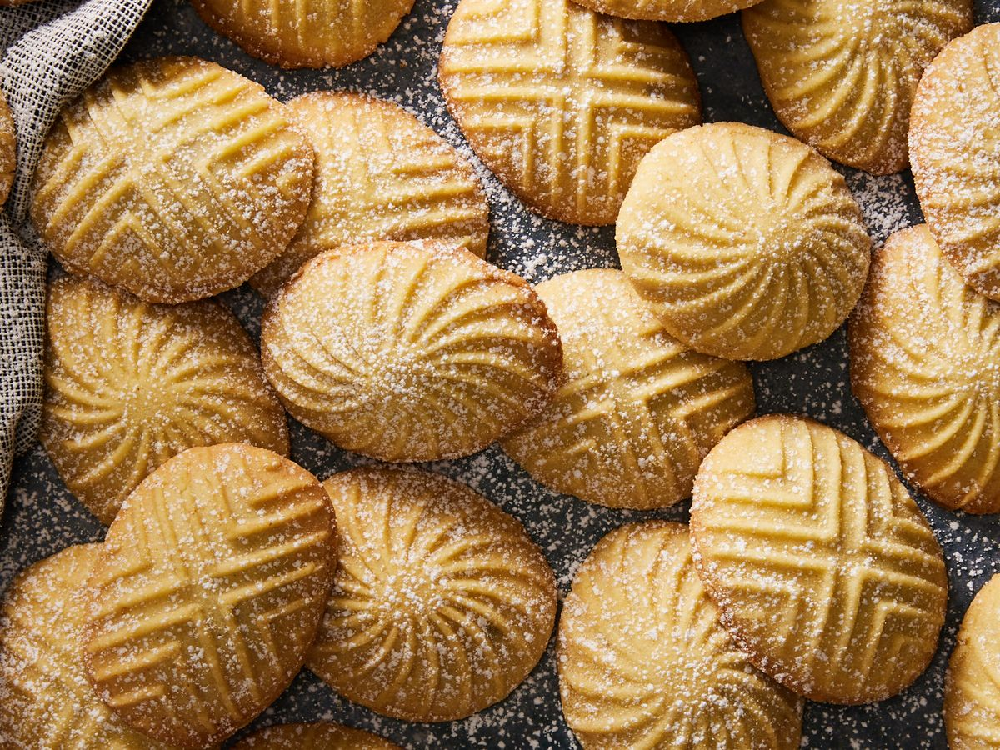

Ma’amoul cookies are a type of Middle Eastern butter cookie that is usually filled with a variety of dried fruits or nuts. Made with semolina flour, the shortbread-like exterior has a slight crunch to it, giving way to a softer filling. Optionally, a hint of mahlab—ground wild cherry pit—is added for a nutty fragrance. While these are especially popular during the holidays, they can be enjoyed all year round. Once baked, they’re dusted with a sprinkling of powdered sugar, adding an extra layer of sweetness to every mildly spiced bite.
Meal prep time : 3 hours
Servings : 24